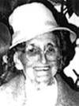

|  |
Olivine Barriault décède à l'âge de 73 ans. dite Livine. Naissance le 20 juin 1908 à Laverlochère, cté Témiscamingue Parrain Albini Mantha, marraine sa soeur Alexina Barriault. Décès le 29 avril 1982 à Louvicourt, cté Abitibi Père: Honoré Barriault Mère:Anna Bourget (sa famille) Mariage le 10 avril 1937 à St-Michel-Archange de Rouyn-Noranda Conjoint: Arthur Dufour décède à l'âge de 90 ans. Naissance le 12 sep 1903 à Roberval, cté Lac-St-Jean Décès le 15 fév 1994 à Val-D'Or, cté Abitibi Père: Cyrice Dufour Mère: Rachel Dorée (sa famille) |
| |
Enfant 1
Liette Dufour décède à l'âge de 75 ans. Naissance: 20 jan 1938 à Rouyn-Noranda, cté Témiscamingue Décès le 4 jan 2014 à Val-D'Or, cté Abitibi Mariage: 28 jul 1956 à Louvicourt, cté Abitibi Conjoint: Normand Blondin décède à l'âge de 65 ans. Père: James Blondin Mère: Alphonsine Trudel Enfant 1 Jean Blondin Enfant 2 Jovette Blondin Enfant 1 Denis Blondin |